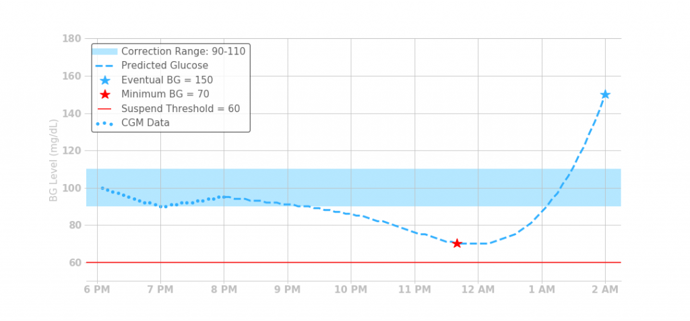
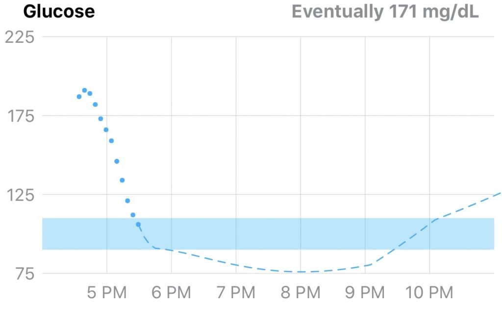

Think Like a Loop¶
“Why isn’t Loop giving me more?” That is a common question from new Loopers.
"Why is Loop suspending right now?" That is another common question.
For these questions, you'll go really far in Looping if you can remember these two things:
- Go to therapy with your Loop
- Everything depends on the predicted BG curve
Therapy with Loop¶
I'll challenge you to "pretend you're at the marriage therapist" as you learn how to use Loop as a partner.
Why are you in disagreement with your partner? What would a therapist tell you? Usually therapy is because of miscommunications with each other. You aren't on the same expectations or priorities. Same applies for Loop. For example, you'd be at the therapist chair tell her "Loop just isn't treating my high BG as fast as I want. This is so frustrating. I correct and Loop just suspends." That right there is the definition of miscommunications and different priorities. Why?
➡️ Loop thinks you have enough insulin to be at target later.
➡️ You think you need more right now.
So...look at the objectives and info you both have at hand.
Loop has the info from the settings you’ve given it, how you’ve described your meals, and how you’ve given insulin. Loop does not know if you are stressed. Loop does not know if you are sick. Loop is not a rage bolus machine and is predicting 6 hours out to safely bring you down without you needing to prevent a low while it does that. Loop is considerate partner. It respects your input and acts gentle and even-keeled.
If you are frustrated with Loop’s actions now...that means you told it the wrong info previously (or are lacking some patience that Loop has). Most often either your meal entry was wrong or your basals or...something else you’ve told Loop has ended up being incorrect.
Fixing that miscommunication will allow Loop to do a better job.
If you misjudged a meal, go back and edit that meal entry.
If you misjudged your basal/ISF/carb ratio needs, correct those (testing to validate is good if you haven’t done that yet)
If you aren’t patient, you can override Loop...but do expect that is not likely to solve the miscommunication you and Loop are having. That’s the relationship equivalent to just talking louder as opposed to talking smarter.
Loop will try to save you when you rage bolus, which may just make you even more frustrated. If you can stop and think "What have I told Loop that might not be accurate right now?" that will be a good step to a meaningful improvement in outcomes.
Tools when you are in disagreement¶
Sure, even with the best therapist, you may still have disagreements. They happen. There are several options for recovering from times like that. The tool you choose may be situationally dependent. Seeing a huge quick BG climb after a meal may be better helped by a carb entry edit as opposed to added patience, but that will depend on your management style.
- Add some patience to your practice. A little patience to give the already added insulin time to work can help with Loop.
- Edit your meal's carb entry. If you find your meal going crazy different than expected (did they forget you said "diet" coke?), you can always go back and edit your original carb guess to be more accurate based on what you're seeing. You can decrease the carbs or increase the carbs. You can change the absorption time. These edits can be done by tapping on the carb chart in Loop's main screen.
- Use overrides to tell Loop about overall insulin needs changing. Hormones...oh lordy the hormones are horrible. That's a good time to use an override to let Loop know that overall you need more than usual. Or if you're about to hike the Himalayas, use an override to let Loop know you will need far less insulin than an average day.
- Open Loop. This is a great tool. If you just had things go really wrong for a bit (bad cannula kink anyone?) then you can open loop until things settle down and you get squared away again. Give your manual injection, Afreeza, or whatever your desire is and wait until you've had 4-6 hours of regular basals going before closing loop again.
- Give pending insulin. If you are really feeling the itch to rage bolus, you can meet Loop at the halfway mark. If you click on the bolus tool while Loop is high temping you, you will see a "pending insulin" value. That is the amount of insulin Loop is planning on giving you through temp basals over the next 30 minutes. If you give that pending insulin total as a bolus now, you will get the entire amount working faster AND Loop agrees you are safe to use it. In this way, Loop won't automatically suspend insulin when you give pending insulin...because your predicted BG curve had said it was needed anyways. Win win...you got a mini-rage bolus and Loop won't be working against you. Good therapy and a good way to avoid post-rage lows.
Predicted BG curve is everything¶
As you start to use Loop you will probably find yourself wondering at some point "why is it suspending insulin right now?" or "Why isn't it giving me increased basals right now?" You might find yourself reverting to a bunch of old-school habits like looking at your carbs on board or insulin on board and trying to calculate a bunch of numbers. Stop there...that's so 1990s. You're a looper now and there is actually an easier way to assess things.
Thinking like a Loop involves just three things
➡️ Predicted BG curve ➡️ Correction Range ➡️ Suspend Threshold
All of Loop's decisions are based on what your predicted BG curve is doing with respect to your correction range and suspend threshold. That's it. All the time. Everytime. It always comes down to that predicted BG curve.
That predicted BG curve has four contributions to its shape:
- Carbs (the ones you've told it about)
- Insulin (the ones you've given through your pump or recorded in Health app)
- Blood glucose momentum (how fast your BG has been changing recently)
- Retrospective correction (how accurate/inaccurate Loop has been recently in predicting your BGs)
Loop models the inputs from those four contributions to form the final shape of the predicted BG curve. Once that curve is generated, Loop looks at where the entire curve will be for the next 6 hours relative to your suspend threshold and correction range, and take one of four actions:
Action 1: Set a 0 u/hr basal rate (aka suspend basals)
Loop will do this anytime your predicted BG curve has any portion that goes below your suspend threshold.
And the remaining three actions all assume NONE of your predicted BG curve is below suspend threshold, otherwise you'd be in Action 1.
Action 2: Set scheduled basal rate
Loop will set your scheduled basal rate when:
- All the predicted BG curve is within the correction range, including the very last value which is called your "eventual BG", or when
- If the eventual BG is above your correction range in 6 hours, but there's a dip below correction range earlier in the curve.
Action 3: Increased basal rate
If eventual BG and all the predicted BG curve is above your correction range, Loop will give you a high (increased) temp basal.
Action 4: Decreased basal rate
If your eventual BG in 6 hours is below correction range, you'll get a decreased basal.
What would Loop do?¶
Test your new found skills...let's play a game where you try to guess the action...
What would Loop do?
It’s 8pm and your predicted BG curve looks like the following. What do you expect Loop to recommend/enact at 8pm? A. Zero (suspend) temp basal B. Scheduled basal from your settings C. High temp basal D. Lower temp basal (between zero and scheduled)

What would your answer be? Before you give your final answer...consider this next twist. Would you give the same answer to this graph as you gave the graph above? If not, what would the answer be for this graph and why? (ignore the timestamp mismatch

This second case has a dramatic drop happening. Suspend threshold is still at 60 mg/dL, correction range is still 90-110, the lowest value on the predicted BG chart is 75 mg/dL, and the eventual BG is 171 mg/dL for this example. So, pretty similar to the first example except this precipitous drop going on right now.
Let me tell you some of the common pitfalls we all can easily slip into when trying to answer these "Why is Loop giving me this basal?" questions.
Wondering about IOB, COB, or DIA in order to answer...those aren't a factor to answering the question as they have already been used to make the predicted BG curve. In other words, they are accounted for already in the information presented. All you need to answer this question is provided by the predicted BG curve, your suspend threshold, and your correction range. Thinking about this as a human...humans tend to say "well, I'm on a rise/fall right now so...[insert Loop action based on that]" Loop isn't looking at the past BG movement alone, instead it's looking at the prediction curve ahead and applying its rules based on that. Any drop or rise going on will have been added to the predicted curve through the BG momentum and retrospective correction components of the algorithm...so again they're already incorporated into the predicted curve.
Restating for emphasis: All you need to answer this question is provided by the predicted BG curve, your suspend threshold, and your correction range.
The answer is B: Loop will give your scheduled basal in both situations shown above. When your predicted BG curve (1) drops for a time below correction range but (2) all of the curve still above suspend threshold, and Eventual BG is (3) above range or within range...Loop will give your scheduled basal.
The logic is a bit of a wait and see. Scheduled basal will maintain the delivery of insulin. Your settings haven't told it this is an "oh my gosh...stop the insulin!" moment (you're predicted to still stay above suspend threshold), but we also don't want to give high temps yet (to correct the eventual BG) because we'd like to safely make it through the part that is below correction range coming up.
If BGs were to drop (enough) or keep dropping (enough), your predicted BG curve would likely slip to your suspend threshold and then Loop would suspend. (One important take away is to not to set your suspend threshold so low that it no longer acts as a safety in these situations.) If BGs were to rise enough such that the whole predicted curve comes back into or above the correction range completely, you'd then get high temp basals to correct for that eventual BG that is above correction range.